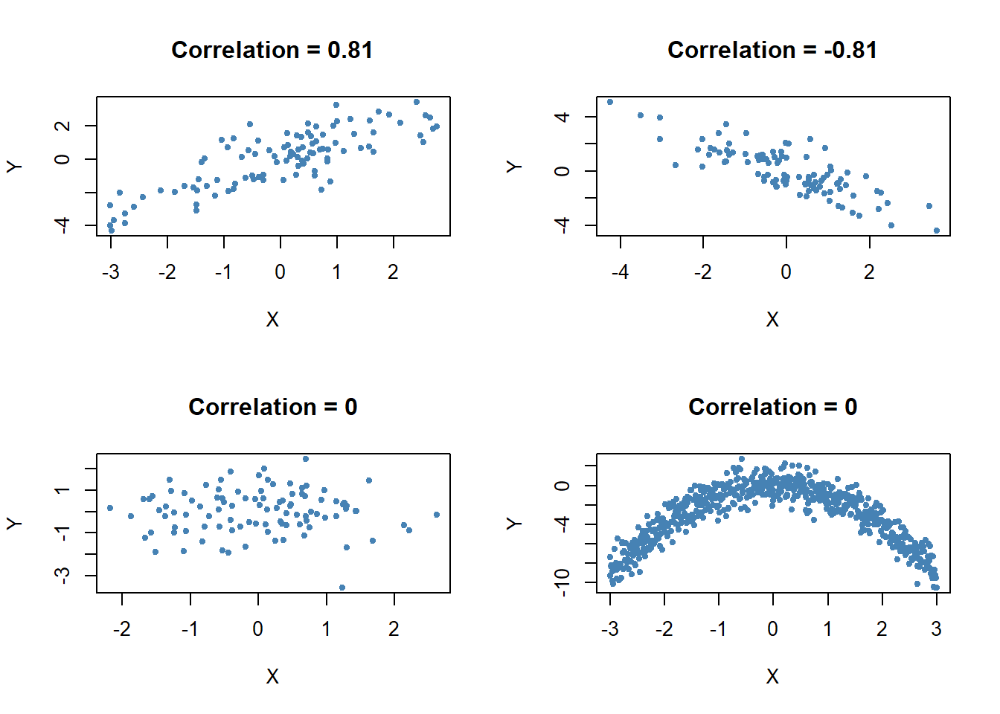

2.3 Regression when X is a Binary Variable
Instead of using a continuous regressor \(X\), we might be interested in running the regression
\[ Y_i = \beta_0 + \beta_1 D_i + u_i \tag{5.2} \]
where \(D_i\) is a binary variable, a so-called dummy variable. For example, we may define \(D_i\) in the following way:
\[ D_i = \begin{cases} 1 \ \ \text{if $STR$ in $i^{th}$ school district < 20} \\ 0 \ \ \text{if $STR$ in $i^{th}$ school district $\geq$ 20} \\ \end{cases} \tag{5.3} \]
The regression model now is
\[ TestScore_i = \beta_0 + \beta_1 D_i + u_i. \tag{5.4} \]
Let us see how these data look like in a scatter plot:
# Create the dummy variable as defined above
CASchools$D <- CASchools$STR < 20
# Plot the data
plot(CASchools$D, CASchools$score, # provide the data to be ploted
pch = 20, # use filled circles as plot symbols
cex = 0.5, # set size of plot symbols to 0.5
col = "Steelblue", # set the symbols' color to "Steelblue"
xlab = expression(D[i]), # Set title and axis names
ylab = "Test Score",
main = "Dummy Regression"
)
We see that with \(D\) as the regressor, it is not useful to think of \(\beta_1\) as a slope parameter since \(D_i \in \{0,1\}\), i.e. we only observe two discrete values instead of a continuum of regressor values lying in some range on the real line. There is no continuous line depicting the conditional expectation function \(E(TestScore_i | D_i)\) since this function is solely defined for \(X\)-positions \(0\) and \(1\).
Therefore, the interpretation of the coefficients in our regression model is as follows:
\(E(Y_i | D_i = 0) = \beta_0\), so \(\beta_0\) is the expected test score in districts where \(D_i=0\) i.e. where \(STR\) is below \(20\).
\(E(Y_i | D_i = 1) = \beta_0 + \beta_1\) or, using the result above, \(\beta_1 = E(Y_i | D_i = 1) - E(Y_i | D_i = 0)\). Thus, \(\beta_1\) is the difference in group specific expectations, i.e. the difference in expected test score between districts with \(STR < 20\) and those with \(STR \geq 20\).
We will now use R to estimate the dummy regression model as defined by the equations (5.2) and (5.3) .
# estimate the dummy regression model
dummy_model <- lm(score ~ D, data = CASchools)
summary(dummy_model)##
## Call:
## lm(formula = score ~ D, data = CASchools)
##
## Residuals:
## Min 1Q Median 3Q Max
## -50.496 -14.029 -0.346 12.884 49.504
##
## Coefficients:
## Estimate Std. Error t value Pr(>|t|)
## (Intercept) 650.077 1.393 466.666 < 2e-16 ***
## DTRUE 7.169 1.847 3.882 0.00012 ***
## ---
## Signif. codes: 0 '***' 0.001 '**' 0.01 '*' 0.05 '.' 0.1 ' ' 1
##
## Residual standard error: 18.74 on 418 degrees of freedom
## Multiple R-squared: 0.0348, Adjusted R-squared: 0.0325
## F-statistic: 15.07 on 1 and 418 DF, p-value: 0.0001202One can see that the expected test score in districts with \(STR < 20\) (\(D_i = 1\)) is predicted to be \(650.1 + 7.17 = 657.27\) while districts with \(STR \geq 20\) (\(D_i = 0\)) are expected to have an average test score of only \(650.1\).
Group specific predictions can be added to the plot by execution of the following code chunk.
# add group specific predictions to the plot
points(x = CASchools$D,
y = predict(dummy_model),
col = "red",
pch = 20
)Here we use the function predict() to obtain estimates of the group specific means. The red dots represent these sample group averages. Accordingly, \(\hat{\beta}_1 = 7.17\) can be seen as the difference in group averages.
summary(dummy_model) also provides an answer to the question whether there is a statistically significant difference in group means. This in turn would support the hypothesis that students perform differently when they are taught in small classes compared to those taught in large classes. We can assess this by a two-tailed test of the hypothesis \(H_0: \beta_1 = 0\). Conveniently, the \(t\)-statistic and the corresponding \(p\)-value for this test are computed by summary().
Since t value \(= 3.88 > 1.96\) we reject the null hypothesis at the \(5\%\) level of significance. The same conclusion can be made when using the \(p\)-value which reports significance to the \(0.00012\%\) level.
As done with linear_model, we may alternatively use the function confint() to compute a \(95\%\) confidence interval for the true difference in means and see if the hypothesized value is an element of this confidence set.
# confidence intervals for coefficients in the dummy regression model
confint(dummy_model)## 2.5 % 97.5 %
## (Intercept) 647.338594 652.81500
## DTRUE 3.539562 10.79931We reject the hypothesis that there is no difference between group means at the \(5\%\) significance level since \(\beta_{1,0} = 0\) lies outside of \([3.54, 10.8]\), the \(95\%\) confidence interval for the coefficient on \(D\).